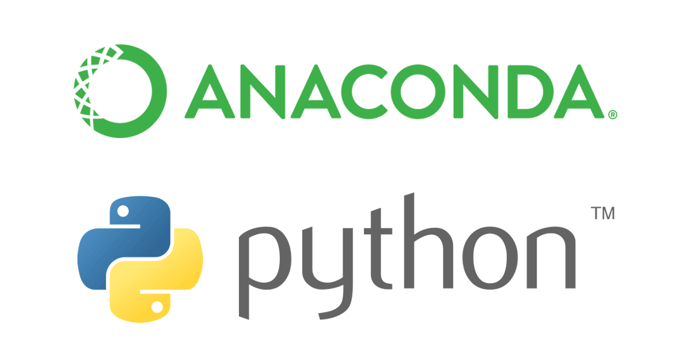

<!DOCTYPE html><html><head><meta charset="utf-8"><title>用 Conda 建立虛擬環境和管理相依套件 | Titangene Blog</title><meta http-equiv="X-UA-Compatible" content="IE=edge"><meta name="viewport" content="width=device-width,initial-scale=1,maximum-scale=1"><meta name="HandheldFriendly" content="True"><meta name="apple-mobile-web-app-capable" content="yes"><meta name="author" content="Titangene"><link rel="shortcut icon" href="/favicon.ico"><link rel="alternate" href="/atom.xml" title="Titangene Blog"><meta name="description" content="學習如何利用 Conda 來建立不同需求所需的 Python 開發環境，並如何管理相依套件。"><meta property="og:type" content="article"><meta property="og:title" content="用 Conda 建立虛擬環境和管理相依套件"><meta property="og:url" content="https://titangene.github.io/article/create-a-virtual-environment-and-manage-dependencies-with-conda.html"><meta property="og:site_name" content="Titangene Blog"><meta property="og:description" content="學習如何利用 Conda 來建立不同需求所需的 Python 開發環境，並如何管理相依套件。"><meta property="og:locale" content="zh_TW"><meta property="og:image" content="https://titangene.github.io/images/cover/python_anaconda.png"><meta property="article:published_time" content="2018-11-19T09:10:00.000Z"><meta property="article:modified_time" content="2019-05-12T07:21:26.000Z"><meta property="article:author" content="Titangene"><meta property="article:tag" content="Anaconda"><meta property="article:tag" content="Conda"><meta property="article:tag" content="Virtual Environment"><meta property="article:tag" content="Package Management"><meta name="twitter:card" content="summary_large_image"><meta name="twitter:image" content="https://titangene.github.io/images/cover/python_anaconda.png"><meta name="twitter:creator" content="@titangeneTW"><meta name="twitter:site" content="@titangene_blog"><meta property="fb:admins" content="100001106016019"><meta property="fb:app_id" content="2470546159839111"><meta property="og:image:width" content="1200"><meta property="og:image:height" content="630"><meta name="google-site-verification" content="AaJ39L7h-nWwJjXJMhAMtXSF6H6BUgGWXC80kYvLic8"><link href="https://fonts.googleapis.com/css2?family=Roboto&display=swap" rel="stylesheet"><link href="https://fonts.googleapis.com/css?family=Source+Code+Pro&display=swap" rel="stylesheet"><link rel="stylesheet" href="https://cdnjs.cloudflare.com/ajax/libs/font-awesome/5.13.0/css/all.min.css"><link rel="stylesheet" href="https://unpkg.com/gitalk/dist/gitalk.css"><link rel="stylesheet" href="/style.css"><script async src="https://www.googletagmanager.com/gtag/js?id=UA-129758206-1"></script><script>!function(a){function n(){dataLayer.push(arguments)}a.dataLayer=a.dataLayer||[],n("js",new Date),n("config","UA-129758206-1")}(window)</script><script>function setLoadingBarProgress(e){document.getElementById("loading-bar").style.width=e+"%"}</script><meta name="generator" content="Hexo 4.2.0"><link rel="alternate" href="/atom.xml" title="Titangene Blog" type="application/atom+xml"></head></html><body><div id="loading-bar-wrapper"><div id="loading-bar"></div></div><script>setLoadingBarProgress(20)</script><header class="l_header"><div class="wrapper"><div class="nav-main container container--flex"><a class="logo flat-box" href="/">Titangene Blog</a><div class="menu"><ul class="h-list"><li><a class="flat-box nav-home" href="/">Home</a></li><li><a class="flat-box nav-archives" href="/archives">Archives</a></li></ul><div class="underline"></div></div><div class="m_search"><form name="searchform" class="form u-search-form"><input type="text" class="input u-search-input" placeholder="Search"> <i class="fas fa-search"></i></form></div><ul class="switcher h-list"><li class="s-search"><a class="fas fa-search" href="javascript:void(0)"></a></li><li class="s-menu"><a class="fas fa-bars" href="javascript:void(0)"></a></li></ul></div><div class="nav-sub container container--flex"><a class="logo flat-box" href="/">Titangene Blog</a><ul class="switcher h-list"><li class="s-comment"><a class="far fa-comment-alt" href="javascript:void(0)"></a></li><li class="s-top"><a class="fas fa-arrow-up" href="javascript:void(0)"></a></li><li class="s-toc"><a class="fas fa-list-ol" href="javascript:void(0)"></a></li></ul></div></div></header><aside class="menu-phone"><nav><a href="/" class="nav-home nav">Home </a><a href="/archives" class="nav-archives nav">Archives</a></nav></aside><script>setLoadingBarProgress(40)</script><div class="l_body"><div class="container clearfix"><div class="l_main"><article id="post-create-a-virtual-environment-and-manage-dependencies-with-conda" class="post white-box article-type-post" itemscope itemprop="blogPost"><section class="meta"><h2 class="title"><a href="/article/create-a-virtual-environment-and-manage-dependencies-with-conda.html">用 Conda 建立虛擬環境和管理相依套件</a></h2><span class="post-time"><span class="post-meta-item-icon"><i class="fa fa-calendar"></i> </span><span class="post-meta-item-text">發表於</span> <time title="建立時間：2018-11-19 17:10:00" itemprop="dateCreated datePublished" datetime="2018-11-19T17:10:00+08:00">2018-11-19 </time><span class="post-meta-divider">|</span> <span class="post-meta-item-icon"><i class="fa fa-calendar-check"></i> </span><span class="post-meta-item-text">更新於</span> <time title="修改時間：2019-05-12 15:21:26" itemprop="dateModified" datetime="2019-05-12T15:21:26+08:00">2019-05-12</time></span> <span class="comments-count"><span class="post-meta-divider">|</span> <span class="post-meta-item-icon"><i class="fas fa-comment"></i> </span><a href="https://titangene.github.io/article/create-a-virtual-environment-and-manage-dependencies-with-conda.html#comments" class="article-comment-count">留言</a></span><div class="post-category"><span class="post-meta-item-icon"><i class="fa fa-folder"></i> </span><span class="post-meta-item-text">分類於</span> <span itemprop="about" itemscope itemtype="http://schema.org/Thing"><a href="/categories/python/" itemprop="url" rel="index"><span itemprop="name">Python</span></a></span></div></section><section class="toc-wrapper"><h3>目錄</h3><ol class="toc"><li class="toc-item toc-level-2"><a class="toc-link" href="#Anaconda"><span class="toc-text">Anaconda</span></a></li><li class="toc-item toc-level-2"><a class="toc-link" href="#Conda"><span class="toc-text">Conda</span></a></li><li class="toc-item toc-level-2"><a class="toc-link" href="#安裝-Anaconda"><span class="toc-text">安裝 Anaconda</span></a></li><li class="toc-item toc-level-2"><a class="toc-link" href="#建立虛擬環境"><span class="toc-text">建立虛擬環境</span></a></li><li class="toc-item toc-level-2"><a class="toc-link" href="#離開虛擬環境"><span class="toc-text">離開虛擬環境</span></a></li><li class="toc-item toc-level-2"><a class="toc-link" href="#利用-conda-安裝套件"><span class="toc-text">利用 conda 安裝套件</span></a></li><li class="toc-item toc-level-2"><a class="toc-link" href="#查看資訊"><span class="toc-text">查看資訊</span></a></li><li class="toc-item toc-level-2"><a class="toc-link" href="#刪除套件"><span class="toc-text">刪除套件</span></a></li><li class="toc-item toc-level-2"><a class="toc-link" href="#更新套件"><span class="toc-text">更新套件</span></a></li><li class="toc-item toc-level-2"><a class="toc-link" href="#刪除虛擬環境"><span class="toc-text">刪除虛擬環境</span></a></li><li class="toc-item toc-level-2"><a class="toc-link" href="#更新-Python"><span class="toc-text">更新 Python</span></a><ol class="toc-child"><li class="toc-item toc-level-3"><a class="toc-link" href="#更新全域環境"><span class="toc-text">更新全域環境</span></a></li></ol></li><li class="toc-item toc-level-2"><a class="toc-link" href="#更新-Anaconda"><span class="toc-text">更新 Anaconda</span></a></li><li class="toc-item toc-level-2"><a class="toc-link" href="#參考連結"><span class="toc-text">參考連結</span></a></li></ol></section><section class="article typo"><div class="article-entry" itemprop="articleBody"><p></p><p>學習如何利用 Conda 來建立不同需求所需的 Python 開發環境，並如何管理相依套件。</p><a id="more"></a><h2 id="Anaconda"><a class="header-anchor" href="#Anaconda"></a>Anaconda</h2><p></p><p>Anaconda 是最受歡迎的 Python 資料科學 (Data Science) 平台，它特點就是本來就包含了各種數據分析、科學計算的相關套件 (例如：NumPy、SciPy、Matplotlib、SymPy、Pandas … 等)，而 Anaconda 的套件管理工具就是 conda。</p><h2 id="Conda"><a class="header-anchor" href="#Conda"></a>Conda</h2><p></p><p>Conda 是一個開源的套件與環境管理的系統，可以在 Windows、macOS 和 Linux 上使用。可利用 Conda 來安裝、執行、更新套件以及其相依的套件，並且還可用來建立不同的開發環境 (例如：不同環境有不同的 Python 版本)。</p><!-- more --><h2 id="安裝-Anaconda"><a class="header-anchor" href="#安裝-Anaconda"></a>安裝 Anaconda</h2><p>至 <a href="https://www.anaconda.com/download/" target="_blank" rel="noopener">Anaconda</a> 官網下載並安裝，建議選擇 Python 3.x 的版本。</p><h2 id="建立虛擬環境"><a class="header-anchor" href="#建立虛擬環境"></a>建立虛擬環境</h2><p>從指定套件列表中建立新的 conda 環境：</p><ul><li><code>-n</code>，<code>--name</code>：設定環境名稱</li></ul><figure class="highlight shell"><table><tr><td class="gutter"><pre><span class="line">1</span><br><span class="line">2</span><br><span class="line">3</span><br><span class="line">4</span><br><span class="line">5</span><br><span class="line">6</span><br><span class="line">7</span><br></pre></td><td class="code"><pre><code class="hljs shell"><span class="hljs-meta">$</span><span class="bash"> conda create -n &lt;environment&gt; &lt;package&gt;</span><br><br><span class="hljs-meta">#</span><span class="bash"> 安裝包含 Anaconda 發行版的套件</span><br><span class="hljs-meta">$</span><span class="bash"> conda create -n &lt;environment&gt; anaconda</span><br><br><span class="hljs-meta">#</span><span class="bash"> 指定 Python 版本</span><br><span class="hljs-meta">$</span><span class="bash"> conda create -n &lt;environment&gt; python=3.6</span><br></code></pre></td></tr></table></figure><ul><li><code>-e</code>，<code>--envs</code>：列出已建立的環境</li></ul><figure class="highlight shell"><table><tr><td class="gutter"><pre><span class="line">1</span><br><span class="line">2</span><br><span class="line">3</span><br><span class="line">4</span><br><span class="line">5</span><br><span class="line">6</span><br></pre></td><td class="code"><pre><code class="hljs shell"><span class="hljs-meta">#</span><span class="bash"> 顯示虛擬環境列表，並顯示正在使用的虛擬環境</span><br><span class="hljs-meta">$</span><span class="bash"> conda info -e</span><br><span class="hljs-meta">#</span><span class="bash"> conda environments:</span><br><span class="hljs-meta">#</span><br>base                  *  D:\Users\Titan\Anaconda3<br>hello                    D:\Users\Titan\Anaconda3\envs\hello<br></code></pre></td></tr></table></figure><p>使用或 <code>activate</code> 至指定環境：</p><figure class="highlight shell"><table><tr><td class="gutter"><pre><span class="line">1</span><br><span class="line">2</span><br><span class="line">3</span><br><span class="line">4</span><br><span class="line">5</span><br></pre></td><td class="code"><pre><code class="hljs shell"><span class="hljs-meta">#</span><span class="bash"> Windows</span><br><span class="hljs-meta">$</span><span class="bash"> activate &lt;environment&gt;</span><br><br><span class="hljs-meta">#</span><span class="bash"> Linux and macOS</span><br><span class="hljs-meta">$</span><span class="bash"> <span class="hljs-built_in">source</span> activate &lt;environment&gt;</span><br></code></pre></td></tr></table></figure><figure class="highlight shell"><table><tr><td class="gutter"><pre><span class="line">1</span><br><span class="line">2</span><br><span class="line">3</span><br><span class="line">4</span><br><span class="line">5</span><br><span class="line">6</span><br></pre></td><td class="code"><pre><code class="hljs shell"><span class="hljs-meta">#</span><span class="bash"> 顯示虛擬環境列表，並顯示正在使用的虛擬環境</span><br><span class="hljs-meta">$</span><span class="bash"> conda info -e</span><br><span class="hljs-meta">#</span><span class="bash"> conda environments:</span><br><span class="hljs-meta">#</span><br>base                     D:\Users\Titan\Anaconda3<br>hello                 *  D:\Users\Titan\Anaconda3\envs\hello<br></code></pre></td></tr></table></figure><blockquote><p><code>*</code> 代表目前正在使用的虛擬環境</p></blockquote><h2 id="離開虛擬環境"><a class="header-anchor" href="#離開虛擬環境"></a>離開虛擬環境</h2><p>如果要將現在環境改回預設值 <code>base</code> (離開目前環境) 可使用下面指令：</p><figure class="highlight shell"><table><tr><td class="gutter"><pre><span class="line">1</span><br><span class="line">2</span><br><span class="line">3</span><br><span class="line">4</span><br><span class="line">5</span><br></pre></td><td class="code"><pre><code class="hljs shell"><span class="hljs-meta">#</span><span class="bash"> Windows</span><br><span class="hljs-meta">$</span><span class="bash"> deactivate</span><br><br><span class="hljs-meta">#</span><span class="bash"> Linux and macOS</span><br><span class="hljs-meta">$</span><span class="bash"> <span class="hljs-built_in">source</span> deactivate</span><br></code></pre></td></tr></table></figure><h2 id="利用-conda-安裝套件"><a class="header-anchor" href="#利用-conda-安裝套件"></a>利用 conda 安裝套件</h2><figure class="highlight shell"><table><tr><td class="gutter"><pre><span class="line">1</span><br><span class="line">2</span><br><span class="line">3</span><br><span class="line">4</span><br></pre></td><td class="code"><pre><code class="hljs shell"><span class="hljs-meta">$</span><span class="bash"> conda install &lt;package&gt;</span><br><br><span class="hljs-meta">#</span><span class="bash"> 安裝多個套件</span><br><span class="hljs-meta">$</span><span class="bash"> conda install &lt;package-1&gt; &lt;package-2&gt;</span><br></code></pre></td></tr></table></figure><h2 id="查看資訊"><a class="header-anchor" href="#查看資訊"></a>查看資訊</h2><p>查看 conda 目前版本</p><figure class="highlight shell"><table><tr><td class="gutter"><pre><span class="line">1</span><br><span class="line">2</span><br></pre></td><td class="code"><pre><code class="hljs shell"><span class="hljs-meta">$</span><span class="bash"> conda -V</span><br>conda 4.5.11<br></code></pre></td></tr></table></figure><p>查看目前環境已安裝的套件</p><figure class="highlight shell"><table><tr><td class="gutter"><pre><span class="line">1</span><br><span class="line">2</span><br><span class="line">3</span><br><span class="line">4</span><br><span class="line">5</span><br><span class="line">6</span><br><span class="line">7</span><br><span class="line">8</span><br><span class="line">9</span><br><span class="line">10</span><br><span class="line">11</span><br><span class="line">12</span><br></pre></td><td class="code"><pre><code class="hljs shell"><span class="hljs-meta">$</span><span class="bash"> conda list</span><br><span class="hljs-meta">#</span><span class="bash"> packages <span class="hljs-keyword">in</span> environment at D:\Users\Titan\Anaconda3:</span><br><span class="hljs-meta">#</span><br><span class="hljs-meta">#</span><span class="bash"> Name                    Version                   Build  Channel</span><br>...<br>jupyter                   1.0.0                    py35_3<br>jupyter_client            5.2.3                    py35_0<br>jupyter_console           4.1.1                    py35_0<br>jupyter_core              4.4.0            py35h629ba7f_0<br>jupyterlab                0.32.1                    &lt;pip&gt;<br>jupyterlab-launcher       0.10.5                    &lt;pip&gt;<br>...<br></code></pre></td></tr></table></figure><p>查看 conda 是否有某套件：</p><figure class="highlight shell"><table><tr><td class="gutter"><pre><span class="line">1</span><br><span class="line">2</span><br><span class="line">3</span><br><span class="line">4</span><br><span class="line">5</span><br><span class="line">6</span><br><span class="line">7</span><br><span class="line">8</span><br></pre></td><td class="code"><pre><code class="hljs shell"><span class="hljs-meta">$</span><span class="bash"> conda search &lt;package&gt;</span><br><br><span class="hljs-meta">$</span><span class="bash"> conda search pandas</span><br>Loading channels: done<br><span class="hljs-meta">#</span><span class="bash"> Name                  Version           Build  Channel</span><br>pandas                    0.9.0      np16py27_0  pkgs/free<br>pandas                    0.9.1      np16py27_0  pkgs/free<br>...<br></code></pre></td></tr></table></figure><p>如果 conda 沒有該套件，可以使用 pip 來安裝套件：</p><figure class="highlight shell"><table><tr><td class="gutter"><pre><span class="line">1</span><br><span class="line">2</span><br><span class="line">3</span><br><span class="line">4</span><br><span class="line">5</span><br></pre></td><td class="code"><pre><code class="hljs shell"><span class="hljs-meta">#</span><span class="bash"> 安裝套件</span><br><span class="hljs-meta">$</span><span class="bash"> pip install &lt;package&gt;</span><br><br><span class="hljs-meta">#</span><span class="bash"> 更新套件</span><br><span class="hljs-meta">$</span><span class="bash"> pip install --upgrade &lt;package&gt;</span><br></code></pre></td></tr></table></figure><h2 id="刪除套件"><a class="header-anchor" href="#刪除套件"></a>刪除套件</h2><figure class="highlight shell"><table><tr><td class="gutter"><pre><span class="line">1</span><br><span class="line">2</span><br><span class="line">3</span><br><span class="line">4</span><br><span class="line">5</span><br><span class="line">6</span><br><span class="line">7</span><br><span class="line">8</span><br></pre></td><td class="code"><pre><code class="hljs shell"><span class="hljs-meta">#</span><span class="bash"> 刪除環境內的套件</span><br><span class="hljs-meta">$</span><span class="bash"> conda remove -n &lt;environment&gt; &lt;package&gt;</span><br><br><span class="hljs-meta">#</span><span class="bash"> 刪除目前環境內的套件</span><br><span class="hljs-meta">$</span><span class="bash"> conda remove &lt;package&gt;</span><br><br><span class="hljs-meta">#</span><span class="bash"> 刪除多個套件</span><br><span class="hljs-meta">$</span><span class="bash"> conda remove &lt;package-1&gt; &lt;package-2&gt;</span><br></code></pre></td></tr></table></figure><h2 id="更新套件"><a class="header-anchor" href="#更新套件"></a>更新套件</h2><figure class="highlight shell"><table><tr><td class="gutter"><pre><span class="line">1</span><br><span class="line">2</span><br><span class="line">3</span><br><span class="line">4</span><br><span class="line">5</span><br><span class="line">6</span><br><span class="line">7</span><br><span class="line">8</span><br><span class="line">9</span><br><span class="line">10</span><br><span class="line">11</span><br></pre></td><td class="code"><pre><code class="hljs shell"><span class="hljs-meta">#</span><span class="bash"> 更新 conda</span><br><span class="hljs-meta">$</span><span class="bash"> conda update conda</span><br><br><span class="hljs-meta">#</span><span class="bash"> 更新 Anaconda</span><br><span class="hljs-meta">$</span><span class="bash"> conda update anaconda</span><br><br><span class="hljs-meta">#</span><span class="bash"> 更新 Python</span><br><span class="hljs-meta">$</span><span class="bash"> conda update python</span><br><br><span class="hljs-meta">#</span><span class="bash"> 更新特定套件</span><br><span class="hljs-meta">$</span><span class="bash"> conda update &lt;package&gt;</span><br></code></pre></td></tr></table></figure><h2 id="刪除虛擬環境"><a class="header-anchor" href="#刪除虛擬環境"></a>刪除虛擬環境</h2><figure class="highlight shell"><table><tr><td class="gutter"><pre><span class="line">1</span><br></pre></td><td class="code"><pre><code class="hljs shell"><span class="hljs-meta">$</span><span class="bash"> conda env remove -n &lt;environment&gt;</span><br></code></pre></td></tr></table></figure><h2 id="更新-Python"><a class="header-anchor" href="#更新-Python"></a>更新 Python</h2><h3 id="更新全域環境"><a class="header-anchor" href="#更新全域環境"></a>更新全域環境</h3><p>若目前 Python 版本是 3.6.1，下面指令只會將 Python 更新至 3.6.x 的最新版本：</p><figure class="highlight shell"><table><tr><td class="gutter"><pre><span class="line">1</span><br></pre></td><td class="code"><pre><code class="hljs shell"><span class="hljs-meta">$</span><span class="bash"> conda update python</span><br></code></pre></td></tr></table></figure><p>若是要更新到其他版本可指定 Python 版本：</p><figure class="highlight shell"><table><tr><td class="gutter"><pre><span class="line">1</span><br></pre></td><td class="code"><pre><code class="hljs shell"><span class="hljs-meta">$</span><span class="bash"> conda install python=3.6</span><br></code></pre></td></tr></table></figure><h2 id="更新-Anaconda"><a class="header-anchor" href="#更新-Anaconda"></a>更新 Anaconda</h2><p>更新套件管理器：</p><figure class="highlight shell"><table><tr><td class="gutter"><pre><span class="line">1</span><br></pre></td><td class="code"><pre><code class="hljs shell"><span class="hljs-meta">$</span><span class="bash"> conda update conda</span><br></code></pre></td></tr></table></figure><div class="warning"><p>注意：Conda 會更新該版本列表中的最高版本，因此 Python 2.7 更新到 2.x 中的最高版本，而 3.x 系列依此類推。</p></div><p>更新 anaconda 此 meta-package，可更新 Anaconda 發行版包含的套件：</p><figure class="highlight shell"><table><tr><td class="gutter"><pre><span class="line">1</span><br></pre></td><td class="code"><pre><code class="hljs shell"><span class="hljs-meta">$</span><span class="bash"> conda update anaconda</span><br></code></pre></td></tr></table></figure><p>如果要更新 Python 的特定版本：</p><figure class="highlight shell"><table><tr><td class="gutter"><pre><span class="line">1</span><br></pre></td><td class="code"><pre><code class="hljs shell"><span class="hljs-meta">$</span><span class="bash"> conda install python==<span class="hljs-variable">$pythonversion</span>$</span><br></code></pre></td></tr></table></figure><h2 id="參考連結"><a class="header-anchor" href="#參考連結"></a>參考連結</h2><ul><li><a href="https://conda.io/docs/user-guide/tasks/manage-pkgs.html" target="_blank" rel="noopener">Managing packages | Conda documentation</a></li><li><a href="https://stackoverflow.com/questions/41535881/how-do-i-upgrade-to-python-3-6-with-conda" target="_blank" rel="noopener">macos - How do I upgrade to Python 3.6 with conda? - Stack Overflow</a></li></ul></div><div class="article-tags tags"><a href="/tags/anaconda/" title="Anaconda">Anaconda</a> <a href="/tags/conda/" title="Conda">Conda</a> <a href="/tags/virtual-environment/" title="Virtual Environment">Virtual Environment</a> <a href="/tags/package-management/" title="Package Management">Package Management</a></div></section><div class="article-share-links"><span>分享：</span> <a class="fab fa-facebook-f" title="Facebook" target="_blank" href="javascript:window.open('https://www.facebook.com/sharer.php?u=https%3A%2F%2Ftitangene.github.io%2Farticle%2Fcreate-a-virtual-environment-and-manage-dependencies-with-conda.html', 'Share on Facebook','width=600, height=600')"></a> <a class="fab fa-twitter" title="Twitter" target="_blank" href="javascript:window.open('https://twitter.com/share?url=https%3A%2F%2Ftitangene.github.io%2Farticle%2Fcreate-a-virtual-environment-and-manage-dependencies-with-conda.html&amp;text=用 Conda 建立虛擬環境和管理相依套件&amp;hashtags=Anaconda,Conda,VirtualEnvironment,Package Management&amp;via=titangene_blog', 'Share on Twitter','width=600, height=260')"></a> <a class="fab fa-linkedin-in" title="Linkedin" target="_blank" href="javascript:window.open('https://www.linkedin.com/shareArticle?mini=true&amp;url=https%3A%2F%2Ftitangene.github.io%2Farticle%2Fcreate-a-virtual-environment-and-manage-dependencies-with-conda.html&amp;title=用 Conda 建立虛擬環境和管理相依套件', 'Share on Linkedin','width=600, height=600')"></a> <a class="fab fa-facebook-messenger" title="Facebook Messenger" target="_blank" href="javascript:window.open('http://www.facebook.com/dialog/send?app_id=2470546159839111&amp;link=https%3A%2F%2Ftitangene.github.io%2Farticle%2Fcreate-a-virtual-environment-and-manage-dependencies-with-conda.html&amp;display=popup&amp;redirect_uri=https%3A%2F%2Fwww.facebook.com%2Fdialog%2Freturn%2Fclose%23_%3D_', 'Send in Messenger','width=600, height=600')"></a> <a class="fab fa-telegram-plane" href="https://telegram.me/share/url?url=https%3A%2F%2Ftitangene.github.io%2Farticle%2Fcreate-a-virtual-environment-and-manage-dependencies-with-conda.html&text=用 Conda 建立虛擬環境和管理相依套件" target="_blank"></a></div><nav id="article-nav"><a href="/article/windows-subsystem-for-linux.html" id="article-nav-prev" class="article-nav-link-wrap" title="Windows Subsystem for Linux (WSL)" rel="prev"><strong class="article-nav-caption">Prev</strong><p class="article-nav-title">Windows Subsystem for Linux (WSL)</p><i class="fas fa-angle-left"></i> </a><a href="/article/set-up-windows-task-scheduler-to-periodically-execute-python-crawler.html" id="article-nav-next" class="article-nav-link-wrap" title="設定 Windows 工作排程定期執行 Python 爬蟲程式" rel="next"><strong class="article-nav-caption">Next</strong><p class="article-nav-title">設定 Windows 工作排程定期執行 Python 爬蟲程式</p><i class="fas fa-angle-right"></i></a></nav><section class="comments" id="comments"><h2>討論區</h2><div id="gitalk-container"></div></section></article><script>window.subData={title:"用 Conda 建立虛擬環境和管理相依套件",tools:!0}</script></div><aside class="l_side"><section class="m_widget about"><div class="avatar-section"><style>.avatar-cover{background:url(/images/avatar_cover.jpg) 0 10%/cover no-repeat}</style><div class="avatar-cover"></div></div><div class="header">Titangene</div><div class="content"><div class="desc">利用 blog 紀錄學習歷程</div></div><div class="content"><meta itemprop="url" content="https://titangene.github.io"><div class="social-wrapper"><a itemprop="sameAs" href="https://github.com/titangene" class="social github" target="_blank" rel="external"><span class="fab fa-github-alt"></span> </a><a itemprop="sameAs" href="https://www.facebook.com/titangene.tw" class="social facebook" target="_blank" rel="external"><span class="fab fa-facebook-square"></span> </a><a itemprop="sameAs" href="https://www.instagram.com/titangene/" class="social instagram" target="_blank" rel="external"><span class="fab fa-instagram"></span> </a><a itemprop="sameAs" href="https://www.flickr.com/photos/titangene" class="social flickr" target="_blank" rel="external"><span class="fab fa-flickr"></span> </a><a itemprop="sameAs" href="/atom.xml" class="social rss" target="_blank" rel="external"><span class="fas fa-rss"></span></a></div></div></section><section class="m_widget facebook_page"><div class="fb-page" data-href="https://www.facebook.com/titangene.blog/" data-width="250" data-small-header="false" data-adapt-container-width="false" data-hide-cover="false" data-show-facepile="true"><blockquote cite="https://www.facebook.com/titangene.blog/" class="fb-xfbml-parse-ignore"><p><a href="https://www.facebook.com/titangene.blog/" class="social facebook" target="_blank"><span class="fab fa-facebook-square"></span></a></p><p><a href="https://www.facebook.com/titangene.blog/" target="_blank" rel="noopener">Titangene Blog</a></p><p>Loading...</p></blockquote></div></section><section class="m_widget recent"><div class="header">Recents</div><div class="content"><ul class="entry"><li><a itemprop="url" class="flat-box" href="/article/jest-jquery-dom-testing.html"><time>2020-08-02</time><div class="name">Jest：DOM 測試 (jQuery)</div></a></li><li><a itemprop="url" class="flat-box" href="/article/jest-manual-mocks.html"><time>2020-07-26</time><div class="name">Jest：Manual Mocks</div></a></li><li><a itemprop="url" class="flat-box" href="/article/jest-timer-mocks.html"><time>2020-07-19</time><div class="name">Jest：Timer Mocks</div></a></li><li><a itemprop="url" class="flat-box" href="/article/jest-snapshot-testing.html"><time>2020-07-12</time><div class="name">Jest：Snapshot 測試</div></a></li><li><a itemprop="url" class="flat-box" href="/article/jest-mock-function.html"><time>2020-07-05</time><div class="name">Jest：Mock 函數</div></a></li><li><a itemprop="url" class="flat-box" href="/article/jest-async-test.html"><time>2020-06-28</time><div class="name">Jest：非同步測試</div></a></li><li><a itemprop="url" class="flat-box" href="/article/jest-setup-teardown.html"><time>2020-06-21</time><div class="name">Jest：Setup &amp; Teardown</div></a></li></ul></div></section></aside><script>setLoadingBarProgress(60)</script></div></div><footer id="footer" class="clearfix"><div class="social-wrapper"><a href="https://github.com/titangene" class="social github" target="_blank" rel="external"><span class="fab fa-github-alt"></span> </a><a href="https://www.facebook.com/titangene.tw" class="social facebook" target="_blank" rel="external"><span class="fab fa-facebook-square"></span> </a><a href="https://www.instagram.com/titangene/" class="social instagram" target="_blank" rel="external"><span class="fab fa-instagram"></span> </a><a href="https://www.flickr.com/photos/titangene" class="social flickr" target="_blank" rel="external"><span class="fab fa-flickr"></span> </a><a href="/atom.xml" class="social rss" target="_blank" rel="external"><span class="fas fa-rss"></span></a></div><div>© 2018 - 2020 <span itemprop="copyrightHolder">Titangene</span></div><div>Powered by <a href="https://hexo.io/" target="_blank" class="codename" rel="external noopener">Hexo</a> - Theme <a href="https://github.com/stkevintan/hexo-theme-material-flow" target="_blank" class="codename" rel="external noopener">MaterialFlow</a></div><div><a rel="license noopener" href="http://creativecommons.org/licenses/by-nc-sa/4.0/" target="_blank" rel="external noopener"></a></div></footer><script>setLoadingBarProgress(80)</script><script src="//cdnjs.cloudflare.com/ajax/libs/jquery/2.1.4/jquery.min.js"></script><script src="https://cdnjs.cloudflare.com/ajax/libs/clipboard.js/2.0.0/clipboard.min.js"></script><script src="https://unpkg.com/gitalk/dist/gitalk.min.js"></script><script src="/js/jquery.fitvids.js"></script><script>var SEARCH_SERVICE="hexo",ROOT="/";ROOT.endsWith("/")||(ROOT+="/")</script><script src="/js/search.js"></script><script src="/js/app.js"></script><script src="/js/clipboard-use.js"></script><script type="text/javascript">var gitalk=new Gitalk({clientID:"dd1684f31ee17e25c22b",clientSecret:"4b51bb4a5996b04d58821a6e3da8558f23da4cdf",id:window.location.pathname,repo:"hexo-blog",owner:"titangene",admin:"titangene",distractionFreeMode:"true"});gitalk.render("gitalk-container")</script><div id="fb-root"></div><script>window.fbAsyncInit=function(){FB.init({appId:"2470546159839111",autoLogAppEvents:!0,xfbml:!0,version:"v2.11"}),FB.AppEvents.logPageView()},function(e,n,t){var o,s=e.getElementsByTagName(n)[0];e.getElementById(t)||((o=e.createElement(n)).id=t,o.src="//connect.facebook.net/zh_TW/sdk.js",s.parentNode.insertBefore(o,s))}(document,"script","facebook-jssdk")</script><script>setLoadingBarProgress(100)</script></body>